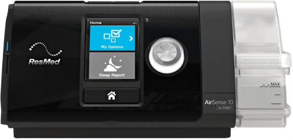
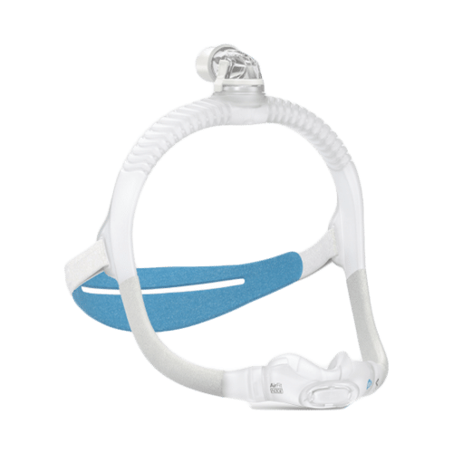

OSA
Obstructive sleep apnea
The most common form — the upper airway physically collapses or is blocked, restricting oxygen even as the body keeps trying to breathe.
Nocta / AI CPAP Companion
Nocta reads a CPAP machine's overnight data and writes one honest, plain-language story — what happened, what likely caused it, and the single next thing to try.
01 The Problem
CPAP apps swing between two failures: they bury patients under raw charts, or they hide the data entirely behind a single green checkmark. Neither builds the confidence and curiosity that keep someone wearing an uncomfortable mask night after night — so most stop within the first month.
A two-minute primer
Before the design, a little context. Three things shape every decision in Nocta: the condition, the hardware that treats it, and the rule that decides whether insurance keeps paying for it.
01 · The condition
Sleep apnea is a disorder in which breathing repeatedly stops and starts during sleep. Pauses can last from a few seconds to minutes and may happen hundreds of times a night — fragmenting sleep and starving the body of oxygen. There are two main types.
The most common form — the upper airway physically collapses or is blocked, restricting oxygen even as the body keeps trying to breathe.

Less common and harder to spot — the part of the brain that controls breathing misses a beat, so the body simply doesn't try to breathe.
02 · The device
CPAP — Continuous Positive Airway Pressure — delivers a steady stream of pressurized air through a mask worn over the nose or mouth, splinting the airway open through the night. Pressure and timing are tuned to the patient, and the machine quietly logs every breath it delivers.
The machines


The masks — fit is everything



03 · The stakes
Compliance is how consistently you use the machine as prescribed. Insurers define it with a hard threshold — and it's where most people fall off, often without realizing the clock is running.
Miss that bar and you can lose insurance coverage entirely — paying out of pocket for the machine, the mask, and every replacement supply. The pressure to “pass” often matters more to people than the therapy itself.
02 Desk Research
Secondary research across the National Library of Medicine, BMC Pulmonary Medicine, and the Journal of the American Heart Association painted a clear gap between diagnosis and follow-through.
Americans are suspected of having sleep apnea
stay on CPAP therapy past the one-year mark
are both diagnosed and stick with treatment long-term
The Opportunity
“How might we make CPAP data feel actionable and human — so people feel guided, not graded?”
The Solution
Distill each night into one honest story — what happened, what likely caused it, and the single next thing to try — wrapped in calm charts and wearable context.
03 Design System
People open Nocta in the dark, half-awake, often anxious about a number. The system leans into that — a deep-navy canvas, one warm sunrise-peach accent reserved for the AI's voice, and serif numerals that read calm rather than clinical.
Palette
Typeface
The hero component — and the whole product in miniature. Every morning it renders one of five states, from a steady night to a flagged escalation.

04 Features
01
Instead of a wall of charts, the first thing you see is a sentence: what last night was, in your words. It stays honest on rough nights, hedges on cause, and ends with one concrete thing to try.
Tap the receipts row and it shows its work — the exact metrics it reasoned from, plus a confidence label.
02
Below the story sits last night's AHI against your personal baseline, scannable secondary metrics, and a timeline of the night with apnea events marked and tappable.
Open any night for the full breath-by-breath stack — flow, pressure, leak, and snore.
03
Zoom out to 7, 30, or 90 nights. Every chart shares one date axis, so AHI, pressure, leak, and usage line up at a glance.
Best- and worst-night comparisons surface what changed, and journal patterns connect what you logged to how you slept.
04
A projection bar shows where the 30-day compliance window stands without ever feeling like a grade. Equipment reminders flag a worn mask or filter.
One tap exports a clean, AI-free PDF to bring to the doctor.
05
Apple Watch, Oura, and Whoop layer heart rate, HRV, and sleep stages onto the same night, one card per source — each pausable per-permission without disconnecting.
Adding a device runs a full mock OAuth flow: authorize, sync 30 nights, done.
05 AI Safety Rails
The moment an app interprets clinical data, it risks becoming a regulated medical device. Nocta's AI lives inside hard rails: every insight is typed JSON with cited data, a confidence label, and a disclaimer — and certain patterns route straight to “talk to your doctor.”
No “great job!”, no streak trophies. A bad night is named calmly and plainly.
“This pattern often suggests…” — never “this means” or “you have.”
It won't name a condition or recommend a pressure change. Ever.
Central-apnea or SpO₂ patterns trip a physician-referral flag.
06 Testing → Shipped
I brought survey and interview participants back to test mid-fidelity wireframes. Their three biggest asks moved from “nice idea” to shipped in the working prototype.

Insight
Users worried about compliance and whether they'd keep their insurance coverage.
Shipped
A compliance projection on the Therapy tab — progress toward the 30-day window, framed as encouragement, never a grade.
Insight
Patients wanted to link smart wearables for richer overnight context.
Shipped
Apple Watch, Oura, and Whoop integrations with a real connect flow and per-source body-response cards on the home screen.


Insight
People wanted control over which metrics lead the home screen.
Shipped
Customizable secondary metrics — including any connected wearable's readings — surfaced right under the nightly story.
The Result


07 Impact
by translating raw CPAP data into personalized, plain-language insights people can understand and act on.
by helping users see what's working, what's not, and the one adjustment worth trying tonight.
through gentle, honest habit-building that keeps people on therapy past the month that usually breaks them.
Development Handoff
Beyond the design, I built a working React prototype — running on my own CPAP data, every chart rendered with Chart.js, and AI insights shipped as typed JSON ready for OpenAI's Structured Outputs and the SleepHQ API.
HTML · CSS · JavaScript (React + Vite) · Chart.js · OpenAI API · SleepHQ API